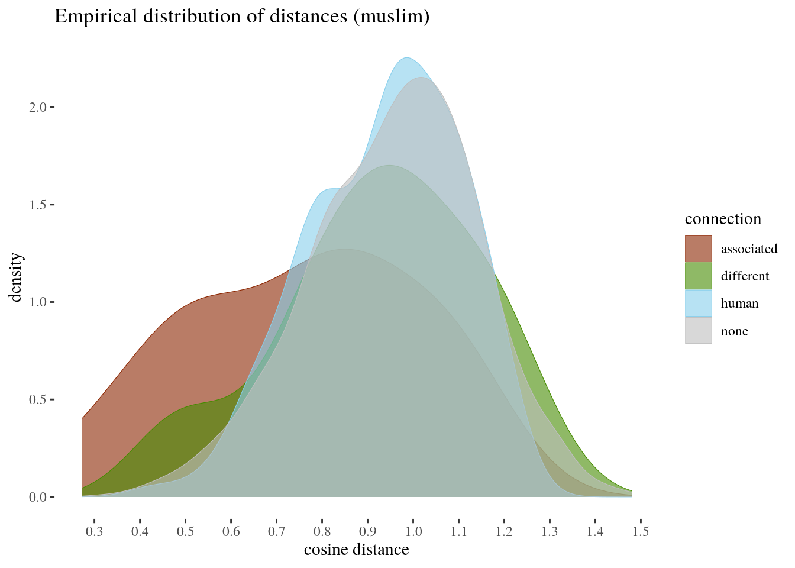

3 Walkthrough with the religion dataset
3.1 Loading and understanding the dataset
We start with loading the libraries needed for the analysis.
library(ggplot2)
library(ggthemes)
library(rethinking)
library(tidyverse)
library(ggpubr)
library(kableExtra)
library(dplyr)
library(ggExtra)
library(cowplot)We will use the choice of protected words and stereotypical predicates used in REF. This is a decent point of departure, not only we want to compare our method to that of REF, but also because this data format is fairly general (as contrasted, say, with a set up for binary stereotypes). Note also that the method we develop here can fairly easily be run for different stereotypization patterns. Let's start with explaining the method and its deployment using a dataset obtained for the religion-related protected words.
Let's load, clean a bit and inspect the head of the religion dataset we prepared. In order to obtain this dataset, we calculated the cosine distance between each protected word and each word from both the bias-related attribute groups, which were used in the original study, and to neutral and human control attributes which we added as control groups. For instance, for religion, the bias-related predicates (coming from the original study in REF) include muslim bias attributes, jew bias attributes, christian bias attributes (see a list in the APPENDIX).
We decided to add control groups in the form of two classes --- neutral words and human-related words. Without a proper control group it is quite hard to compare the resulting cosine distances and decide on their significance in bias detection. We prepared approximately 230 neutral words to double-check the prima-facie neutral hypothesis that their cosine similarity to the protected words will oscillate around 0 (that is, the distances will be around 1). This provides us with a more reliable point of reference. Moreover, we added human attributes that are associated with people in general to investigate whether the smaller cosine distance between protected words and stereotypes can result simply from the fact that the stereotype predicates are associated with humans. For two control groups, we have randomly drawn 230 words that do not express any property usually attributed to humans, and human related attributes.
religion <- read.csv("../datasets/religionReddit.csv")[-1]
colnames(religion) <- c("protectedWord","wordToCompare","wordClass",
"cosineDistance","cosineSimilarity","connection")
#head(religion)
#library(plyr)
religion$wordClass <- as.factor(religion$wordClass)
#levels(religion$wordClass)
#religion$wordClass <- mapvalues(religion$wordClass,
# from = levels(religion$wordClass),
# to = c("christian","human","jewish","muslim","neutral"))
levels(religion$wordClass) <- c("christian","human","jewish","muslim","neutral")
head(religion) %>% kable(format = "latex",booktabs=T,
linesep = "", escape = FALSE,
caption = "Head of the religion dataset.") %>% kable_styling(latex_options=c("scale_down"))The protectedWord column contains words from a protected class that (in a perfect world according to the assumptions of the orignal study) should not be associated with harmful stereotypes. wordToCompare contains attributes, including stereotypes and control group words. For each row we compute the cosine distances between a given protected word and a given attribute word. wordClass tells us which class an attribute is supposed to be stereotypically associated with, that is, whether the word from wordToCompare is associated stereotypically with jews, christians or muslims, or whether it belongs to a control group. cosineDistance is simply a calculation of the cosine distance between protected word and atrribute. cosineSimilarity contains the result of substracting cosine distance from 1. connection contains information about the relation type between a protected word and an attribute. If the attribute is e.g. a harmful jewish stereotype and the protected word is also from the judaism group, the connection has value associated. If the attribute is still stereotypically jewish, but the protected word comes from another religion, the connection is labelled as different. If the attribute belongs to a neutral group then the connection is labelled as none and if an attribute belongs to the human class, then the connection is labelled as human.
3.2 First look at the empirical distributions
First let's take a look at the empirical distribution of distances by the connection type, initially ignoring the human control class for now.
The first impression is that while there is a shift for associated words towards smaller cosine distances as compared to the neutral words, slightly surprisingly a slightly weaker shift in the same direction is visible for attributes associated with different stereotypes. Moreover, the empirical distributions overlap to alarge extent and the means grouped by connection type do not seem too far from each other. In fact, as there is a lot of variety in the cosine distances (as we will soon see), we need to gauge the uncertainty involved, and to look more carefully at individual protected words to get a better idea of how the cosine distance distribution changes for different attribute groups and different protected classes. Now, let's add the human attributes to the picture:
Notice that the distribution for human (even though we did our best not to include in it any stereotype-related atributes) is left-skewed, with much overlap with associated and different, which illustrates the need to take being associated with humans as an important predictor.
Our focus lies in connection as a predictor. Morever, later on we'll be interested in looking at the protected words separately, and at protected words split by connection. For technical reasons it is useful to represent these factors as integer vectors.
religion$con <- as.integer(religion$connection)
religion$pw <- as.integer(religion$protectedWord)
religion$pwFactor <- factor(paste0(religion$protectedWord, religion$connection))
religion$pwIndex <- as.integer(religion$pwFactor)A short script, cleanDataset to make this faster, so equivalently:
source("../functions/cleanDataset.R")
religion <- read.csv("../datasets/religionReddit.csv")[-1]
religion <- cleanDataset(religion,c("christian","human","jewish","muslim","neutral"))3.3 Looking at the islam-related words
For now, let's focus on five protected words related to islam ("imam", "islam", "mosque", "muslim", and "quran"). The word list associates with islam four stereotypical attributes ("violent", "terrorist", "uneducated" and "dirty"). First, we select and plot the empirical distributions for these protected words.
library(tidyverse)
muslimWords <- c("imam","islam","mosque","muslim","quran")
muslim <- religion %>% filter(protectedWord %in% muslimWords)
ggplot(muslim, aes(x = cosineDistance, fill = connection, color = connection))+
geom_density(alpha=0.6,size = .2)+
scale_fill_manual(values = c("orangered4","chartreuse4", "skyblue", "gray"))+
scale_x_continuous(breaks = seq(0.3,1.5, by = 0.1))+xlab("cosine distance")+
scale_color_manual(values = c("orangered4","chartreuse4","skyblue","gray"))+
theme_tufte()+ggtitle("Empirical distribution of distances (muslim)")
Once we focus on words related to islam, the associated bias seems to be stronger than in the whole dataset. This is a step towards illustrating that the distribution of bias is uneven.
Now, say we want to look at a single protected word. Since the dataset also contains comparison multiple control neutral and human attributes, we randomly select only 5 from none and 5 from human control groups of those for the visualisation purposes.
library(tidyverse)
muslimClass <- muslim %>% filter(protectedWord == "muslim")
neutralSample <- sample_n(filter(muslimClass,connection == "none"), 5)
humanSample <- sample_n(filter(muslimClass,connection == "human"), 5)
muslimVis <- muslimClass %>% filter(connection != "none" & connection !="human")
muslimVis <- rbind(muslimVis,neutralSample,humanSample)
#we plug in our visualisation script
source("../functions/visualisationTools.R")
#two arguments: dataset and protected word
visualiseProtected(muslimVis,"muslim")
Note that the distance between the grey point and the other points is proportional to cosine distance, the non-grey point size is proportional to cosine similarity to the protected word, and color groups by the connection type. So for muslim it seems that the stereotypes coming from the word list are fairly well visible. To give you some taste of how uneven the dataset is, compare this to what happens with priest.
library(tidyverse)
priestClass <- religion %>% filter(protectedWord == "priest")
neutralSample <- sample_n(filter(priestClass,connection == "none"), 5)
humanSample <- sample_n(filter(priestClass,connection == "human"), 5)
priestVis <- priestClass %>% filter(connection != "none" & connection !="human")
priestVis <- rbind(priestVis,neutralSample,humanSample)
#we plug in our visualisation script
source("../functions/visualisationTools.R")
#two arguments: dataset and protected word
visualiseProtected(priestVis,"priest")
Here you can see that some human attributes are closer than stereotype attributes, and that there is no clear reason to claim that associated attributes are closer than different or human attributes. This, again, illustrates the need of case-by-case analysis with control groups.
The general idea now is that the word lists provided in different pieces of research are just samples of attributes associates with various stereotypes and should be treated as such: the uncertainty involved and the sample sizes should have clear impact on our estimates.
3.4 Bayesian model structure and assumptions
We will now think of cosine distance as the output variable, and will build a few Bayesian models to compare. First, we just build a baseline model which estimates cosine distance to the attributes separately for each protected word. The underlying idea is that different protected words might in general have different relations to all the attributes and these relations should be our point of departure.
Here is the intuition behind the mathematical Bayesian model involved. Our outcome variable is cosine difference, which we take to me normally distributed around the predicted mean for a given protected word (that is, we assume the residuals are normally distributed). The simplest model specification is:
That is, we assume the estimated means might be different for diferent protected words and our prior for the mean and the overal standard deviation are normal with mean 1 and sd=.5 and half-cauchy with parameters 0,1. Further on we'll also estimate additional impact the connection type may have. For this impact we take a slightly skeptical prior centered around 0 distributed normally with sd = 1. These are fairly weak and slightly skeptical regularizing priors, which can be illustrated as follows:

3.5 Choosing predictors
Now we can define and compile the baseline model. Its parameters will have a posterior distribution obtained using either Hamiltionian Monte Carlo methods (STAN) available through the rethinking package.
library(rethinking)
options(buildtools.check = function(action) TRUE )
religionBaseline <- ulam(
alist(
cosineDistance ~ dnorm(mu,sigma),
mu <- m[pw],
m[pw] ~ dnorm(1,.5),
sigma ~ dcauchy(0,1)
),
data = religion,
chains=2 , iter=4000 , warmup=1000,
start= list(mu = 1, co = 0, sigma= .3),
log_lik = TRUE, cores=4
)
#saving
#saveRDS(religionBaseline,
#file = "cosineAnalysis/models/religionBaseline.rds")The only reason we need it is the evaluation of connection as a predictor. Does including it in o the model improve the situation? To investigate this, let's now build a model according to the following specification:
\[\begin{align} cosineDistance_i & \sim dnorm(\mu_i, \sigma) \\ \mu_i & = m_{pw} + co_{con}\\ m_{pw} & ~ dnorm(1,.5) \\ co_{con} & ~ dnorm(0,1) \\ \sigma &\sim dcauchy(0,1) \end{align}\]The idea now is that each connection type comes with its own coefficient \(co\) that has impact on mean distances for protected words taken separately.
library(rethinking)
options(buildtools.check = function(action) TRUE )
religionCoefs <- ulam(
alist(
cosineDistance ~ dnorm(mu,sigma),
mu <- m[pw] + co[con],
m[pw] ~ dnorm(1,.5),
co[con] ~dnorm(0,.5),
sigma ~ dcauchy(0,1)
),
data = religion,
chains=2 , iter=8000 , warmup=1000,
log_lik = TRUE
)First, let's see if this model is really better in terms of the Widely Acceptable Information Criterion (WAIC):
## WAIC SE dWAIC dSE pWAIC weight
## religionCoefs -2328 93 0 NA 20 1
## religionBaseline -2283 95 45 17 16 0Clearly, it should be given weight 1 as compared to the baseline model. So far, we've learned that the connection type actually has predictive value. Let's take a look at the coefficient estimates:
## mean sd 5.5% 94.5% n_eff Rhat4
## co[1] -0.14956420 0.1151675 -0.3261650 0.03741930 294.2033 1.001449
## co[2] -0.09880543 0.1145024 -0.2736985 0.08813271 291.5044 1.001564
## co[3] -0.07282752 0.1133894 -0.2447778 0.11158986 287.7820 1.001627
## co[4] -0.03103179 0.1131420 -0.2034442 0.15268770 286.8283 1.0016063.6 Dataset-level coefficients
Let's plot them together with their highest posterior density invervals, for the three topic groups.
What should strike us is that while the mean estimates of the coefficients indeed do differ a bit, usually the highest posterior density invervals all include zero, and so we do not have strong reasons to say that, say, as far as the whole religion dataset is involved, being associated indeed is connected with lower cosine distance. A second striking observation is that the estimated impact for associated stereotypes is quite often not too different from the estimated impact of attributes associated with different stereotypes, and both are sometimes not too far from the estimated impact for simply human attributes. In general, once the uncertainty involved is taken seriously by using control groups and statistical uncertainty estimation that does not dispose of pointwise data, the picture which focuses only on differences between means of means is too simplistic.
But this doesn't mean important differences for some protected words are not there. For one thing, if you start with a word list that is very uneven, the actually not so bad status of some of the protected words might mask a pretty bad situation in which some other protected words are. For comparison, let's see what a model focused on words related to islam tells us.
#this is how we build the model
religion <- read.csv("cosineAnalysis/datasets/religionReddit.csv")[-1]
colnames(religion) <- c("protectedWord","wordToCompare","wordClass",
"cosineDistance","cosineSimilarity","connection")
levels(religion$wordClass) <- c("christian","human","jewish","muslim","neutral")
muslimWords <- c("imam","islam","mosque","muslim","quran")
muslim <- religion %>% filter(protectedWord %in% muslimWords)
muslim$protectedWord <- droplevels(muslim$protectedWord)
muslim$pw <- as.integer(muslim$protectedWord)
muslim$con <- as.integer(muslim$connection)
muslim$pwFactor <- factor(paste0(muslim$protectedWord, muslim$connection))
muslim$pwIndex <- as.integer(muslim$pwFactor)
islamCoefs <- ulam(
alist(
cosineDistance ~ dnorm(mu,sigma),
mu <- m[pw] + co[con],
m[pw] ~ dnorm(1,.5),
co[con] ~dnorm(0,.5),
sigma ~ dcauchy(0,1)
),
data = muslim,
chains=2 , iter=10000 , warmup=1000, cores = 4,
log_lik = TRUE
)Let's take a look at the coefficients:
## mean sd 5.5% 94.5% n_eff Rhat4
## co[1] -0.1979930035 0.1708785 -0.4682696 0.07634977 1789.894 1.003445
## co[2] -0.0334215769 0.1687587 -0.3021954 0.23720938 1738.720 1.003575
## co[3] -0.0192492753 0.1675754 -0.2840596 0.24860974 1732.907 1.003755
## co[4] -0.0003911363 0.1670610 -0.2661047 0.26815172 1723.758 1.003837While muslim words were unusual in the sense that the disparity between associated attributes and others is stronger, the evidence is still not conclusive. This is because the variation even within islam-related words is large enough (and sample sizes sufficiently small) for all the highest posterior density invervals to still include zeros.
So, it seems, taking a closer look does seem to make a difference. The question is, what happens if we do take a close look at the level of protected words?